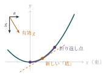

STEP II 2021、第10問
先に進む前に問題を読んでおこう。問題は、OCRが配布している2021年のSTEP問題一式（zipファイル）のSTEP IIに収録されている： www.ocr.org.uk/Images/696588-2021-past-papers.zip
導入
列車が駅を出発するとき、体は座席に押しつけられるように感じる。テーブルの上のコーヒーカップでは液面が傾き、床の上のボールは後方へ転がっていく。列車の中から見ると、あたかも重力が傾いて、下向きだけでなくわずかに後ろ向きにもはたらいているかのように見える。アインシュタイン（Einstein）は、これが単なるたとえ以上のものだという気づきを「生涯で最も幸福な考え」と呼んだ。すなわち、重力と加速度は局所的には区別できないのである。
この問題では、加速する列車の中にある曲がった針金にビーズが通されている。列車から見ると、ビーズは正接が \(a/g\) である角だけ傾いた重力場の中にあるかのように振る舞う。針金の底はもはや最も低い点ではなく、ビーズは新しい平衡点（equilibrium）のまわりで振動する。
取りかかる前に
列車は西向き（\(x\) の負の向き）に加速度 \(a\) で加速している。列車内の観測者にとって、質量 \(m\) の物体にはどのような「見かけの力」がはたらいているように見えるか。
列車の座標系では、見かけの力（fictitious force）\(-m \times (\text{座標系の加速度})\) を加えれば、ニュートン（Newton）の第2法則が成り立つ。座標系は \(x\) 方向に加速度 \(-a\) で加速しているので、見かけの力は \(+ma\) で、東向きである。重力と合わせると、ビーズは単位質量あたり \((a, -g)\) の有効重力を受ける。これは東へ傾いている。
順を追って解く
段階 1 原点では静止できない
原点では針金 \(ky = x^2\) は水平である。そこでは垂直抗力（normal reaction）は鉛直向きなので、東向きの見かけの力 \(ma\) を打ち消すことができない。針金に沿った合力は \(ma \neq 0\) であるから、ビーズは列車に対して静止していることはできない。■
段階 2 エネルギーの式
垂直抗力 \(\mathbf{N}\) を含めて、列車の座標系での運動方程式を書け。次に、速度 \((\dot x, \dot y)\) との内積をとれ。なぜ \(\mathbf{N}\) は消えるのか。
列車の座標系では \[m(\ddot x, \ddot y) = \mathbf{N} + (ma, -mg).\] 針金はなめらかなので \(\mathbf{N}\) は針金に垂直であり、したがって針金に沿った向きをもつ速度 \((\dot x, \dot y)\) にも垂直である。速度との内積（dot product）をとると \(\mathbf{N}\) が消える： \[m\dot x\ddot x + m\dot y\ddot y = ma\dot x - mg\dot y, \qquad\text{よって}\qquad \dot x(\ddot x - a) + \dot y(\ddot y + g) = 0. \qed\] 左辺は \(\frac12(\dot x^2 + \dot y^2) - ax + gy\) の導関数であり、したがってこの量は一定である。■
これは列車の座標系におけるエネルギー保存（conservation of energy）であり、見かけの力を含めた単位質量あたりのポテンシャルエネルギー（potential energy）\(-ax + gy\) をもつ。
段階 3 どこまで上がるか
ビーズは原点で静止した状態から動き出すので、この定数は \(0\) である。最高点ではビーズは一瞬静止する。このことからどのような方程式が得られるか。
静止しているとき \(\frac12(\dot x^2 + \dot y^2) = 0\) なので \(ax = gy\) である。\(y = \frac{x^2}{k}\) とあわせると \(ax = \frac{gx^2}{k}\) となるので、（出発点 \(x = 0\) を除いて）\(x = \frac{ak}{g}\) であり、 \[b = \frac{a^2k}{g^2}. \qed\] ビーズは針金に沿って東へ上っていき、点 \(\bigl(\frac{ak}{g}, \frac{a^2k}{g^2}\bigr)\) に達したのち原点へ戻り、これを繰り返す。
段階 4 最も速い点
速さの2乗を \(x\) だけの関数として表せ。それが最大になるのはどこか。
速さの2乗は \(2(ax - gy) = 2\bigl(ax - \frac{gx^2}{k}\bigr)\) であり、これは \(x\) の2次式で、2つの折り返し点のちょうど中間 \(x = \frac{ak}{2g}\) で最大となる。そこでの速さの2乗は \(2\bigl(\frac{a^2k}{2g} - \frac{a^2k}{4g}\bigr) = \frac{a^2k}{2g}\) なので、最大の速さは \[a\sqrt{\frac{k}{2g}}. \qed\]
\(x = \frac{ak}{2g}\) における針金の傾きを求めよ。それは有効重力 \((a, -g)\) の向きとどのような関係にあるか。
傾きは \(\frac{2x}{k} = \frac ag\) である。したがってこの点で針金は有効重力に垂直である。すなわち、ここは傾いた重力場における針金の「最も低い」点であり、ビーズはこの点のまわりで振動する（図 11.5.1）。

振り返り
都合のよい座標系で考え、見かけの力を加える。列車の座標系では針金は固定されており、その代償は一定の力が1つ加わることだけである。
速度との内積をとる。これにより拘束力（constraint force）が消え、エネルギーの式が得られる。
答えを解釈する。折り返し点と最も速い点には幾何学的な意味がある。有効重力が傾いているのである。
背後にある数学
見かけの力
ニュートンの法則は慣性系（inertial frame）、すなわち加速していない座標系で成り立つ。加速する座標系でも、見かけの力を加えれば法則を救うことができる。加速度 \(\mathbf{A}\) をもつ座標系では \(-m\mathbf{A}\) を、回転座標系ではさらに遠心力（centrifugal force）とコリオリ力（Coriolis force）を加えればよい。これらが「見かけの」力と呼ばれるのは、それを及ぼす物体が存在しないからであり、座標系がもたらす産物にすぎない。しかし、その座標系の中にいる者にとってはまったく現実のものである。遠心力は地球を極方向に押しつぶし、コリオリ力はハリケーンの回転の向き（北半球では反時計回り）を決め、長距離砲の砲弾をそらせる。
等価原理
一定の見かけの力 \(-m\mathbf{A}\) は、重力とまったく同様に質量に比例する。閉じた箱の中でのどんな実験によっても、箱が惑星の上に静止しているのか、何もない空間で加速しているのかを区別することはできない。これが等価原理（equivalence principle）である。アインシュタインはこれを一般相対性理論（general relativity）の出発点とした。加速する箱を横切る光は曲がって見えるので、重力場の中でも光は曲がるはずである。また、加速するロケットの前部と後部の時計は異なる速さで進むので、重力場の中で高さの異なる時計も異なる速さで進むはずである。どちらの予言も確かめられており、後者はすべての GPS 衛星で補正しなければならない。衛星の時計は、この効果だけで地上の時計より1日あたり約 \(45\) マイクロ秒速く進むのである。
1907年、ベルンの特許局に勤めていたアインシュタインは、特殊相対性理論（special relativity）についての総説を書いていた。そのとき、後に本人が回想したところによれば、「生涯で最も幸福な考え」が浮かんだ。屋根から自由落下する人は自分の重さを感じないだろう、というものである。落下する座標系を選べば、重力は「変換によって消し去る」ことができる。この考えを1915年の一般相対性理論にまで仕上げるには、さらに8年の歳月と、大量の新しい数学（ガウス（Gauss）とリーマン（Riemann）が発展させた、曲がった空間の微分幾何学（differential geometry））を要した。
思考のスキル
一定の加速度をもつ座標系では、一定の見かけの力がはたらく。それはポテンシャルエネルギーに含めることができ、その座標系でエネルギーが保存される。
運動方程式と速度との内積をとって拘束力を消去するという技法は、どんな座標系でも使える。大学では、これは一般的な原理となる。方程式が時間に陽に依存しない系には、保存されるエネルギーが存在するのである。
次の一歩
列車の上の大砲。STEP I 2000、第9問 に挑戦せよ。加速する車両の中で発射された物体を扱う問題で、加速度は重力の傾きのようにはたらく。
向かい風。STEP II 2006、第11問 に挑戦せよ。一定の風に逆らって投げた物体を扱う問題で、物体は着地する前に風で手元へ押し戻されることもある。
列車の中のコーヒー。加速する列車の中のコーヒーカップの液面は、水平面に対して角 \(\arctan(a/g)\) だけ傾いた平面であることを示せ。
微小振動。\(x = \frac{ak}{2g}\) のまわりでのビーズの微小振動の周期を求めよ。（ヒント：新しい底の近くでは、針金はその曲率半径（radius of curvature）に等しい半径の円で近似できる。）
さらに学ぶために
Daniel Kleppner & Robert Kolenkow, An Introduction to Mechanics（Cambridge University Press）。非慣性系と見かけの力についての章。
Albert Einstein, Relativity: The Special and the General Theory（さまざまな版がある）。アインシュタイン自身による一般向けの解説で、加速する箱の話も含まれている。
Pedro Ferreira, The Perfect Theory（Little, Brown）。一般相対性理論の「伝記」である。